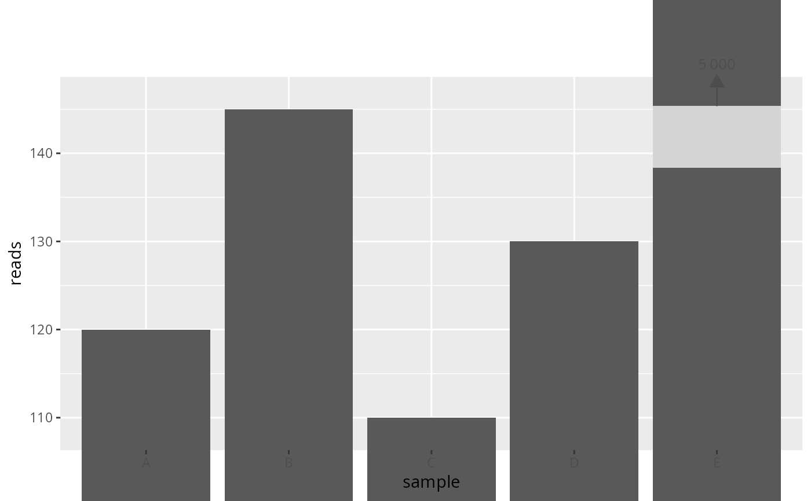
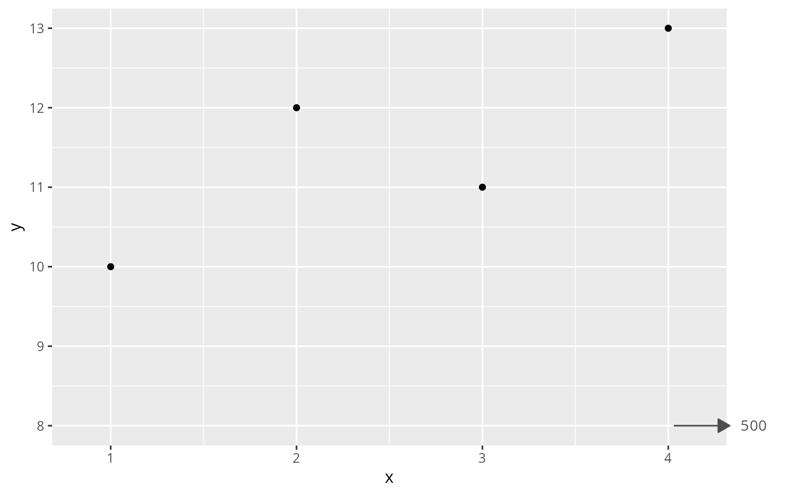

Zoom into the non-outlier region and annotate outliers with arrows
Source:R/break_outlier_axis.R
zoom_outlier_axis.Rd
Zooms the plot into the main data cluster by applying
ggplot2::coord_cartesian(), then adds a small arrow with a value label
at the panel edge for each outlier data point. Outliers are auto-detected
using the same ratio-based approach as break_outlier_axis(): a gap
between consecutive sorted positive values is declared when their ratio
exceeds cutoff. The segment with the most unique values becomes the
"main cluster" (zoom region); everything outside it is annotated.
Arrows for high y-outliers point upward at the top of the panel; low
y-outliers point downward at the bottom. The mirror logic applies to
x-axis outliers. A margin fraction is added beyond the cluster boundary
so data at the edge is not clipped. Plot margins are automatically enlarged
to prevent arrows and labels that extend beyond the panel from being cut by
the device boundary.
Usage
zoom_outlier_axis(
p = NULL,
cutoff = 5,
axis = c("y", "x", "both"),
arrow_color = "grey30",
arrow_size = 0.3,
label_size = 3.5,
label_format = NULL,
margin = 0.05,
extra_margin = 50,
label_angle = 0,
bar_gradient = TRUE
)Arguments
- p
A ggplot2::ggplot object to modify. When
NULL, returns a spec object that can be added to a ggplot with+.- cutoff
(numeric, default
5) Ratio threshold for gap/outlier detection. Seebreak_outlier_axis()for details.- axis
(character, default
"y") Which axis to process:"y","x", or"both".- arrow_color
(character, default
"grey30") Colour of the arrows and value labels.- arrow_size
(numeric, default
0.3) Arrow head size in centimetres, passed toggplot2::arrow().- label_size
(numeric, default
3.5) Text size for outlier value labels, passed toggplot2::annotate().- label_format
(character, default
NULL) Asprintf-style format string for outlier values (e.g.,"%.0f","%.2e"). WhenNULL,base::format()withbig.mark = ","is used.- margin
(numeric, default
0.05) Fraction of the main-cluster range to add as padding beyond the zoom boundary. The arrow and label are placed within this margin so they remain visible.- extra_margin
(numeric, default
50) Additional plot margin in points ("pt") added to the side(s) where outlier arrows and labels are drawn, so thatclip = "off"annotations are not cut by the device boundary. Set to0to disable.- label_angle
(numeric, default
0) Angle in degrees for outlier value labels. Use e.g.90when many outliers are close together and labels overlap horizontally.- bar_gradient
(logical, default
TRUE) IfTRUE, draw the outlier arrows with a colour gradient along their length; ifFALSE, use a solidarrow_color.
Value
A modified ggplot2::ggplot object with ggplot2::coord_cartesian()
applied (overriding any existing coordinate system) and outlier arrows
added as annotations. clip = "off" is set so arrows can extend slightly
beyond the panel edge.
Limitations
Overrides any existing
coord_*on the plot.Outlier detection uses positive values only; negative-value outliers are not detected.
Works best with linear scales.
When multiple outlier points share the same position on the opposite axis, one arrow is drawn per unique position showing the extreme value.
Examples
# \donttest{
df <- data.frame(
sample = c("A", "B", "C", "D", "E"),
reads = c(120, 145, 110, 130, 5000)
)
p <- ggplot2::ggplot(df, ggplot2::aes(x = sample, y = reads)) +
ggplot2::geom_col()
# Via direct call
zoom_outlier_axis(p, cutoff = 5, axis = "y")

# Via + operator with custom label format
p + zoom_outlier_axis(cutoff = 5, label_format = "%.0f reads")
# Scatter plot with x-axis outlier
df2 <- data.frame(x = c(1, 2, 3, 4, 500), y = c(10, 12, 11, 13, 8))
p2 <- ggplot2::ggplot(df2, ggplot2::aes(x = x, y = y)) +
ggplot2::geom_point()
p2 + zoom_outlier_axis(axis = "x")

# }
if (FALSE) { # \dontrun{
data(data_fungi_sp_known, package = "MiscMetabar")
p_pq <- plot_tax_count_pq(
data_fungi_sp_known, "Time",
merge_sample_by = "Time", taxa_fill = "Class"
)
p_pq + zoom_outlier_axis(cutoff = 2)
} # }